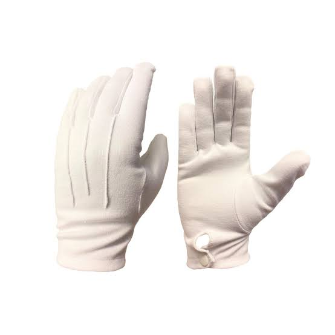
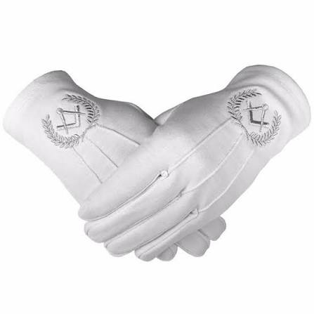
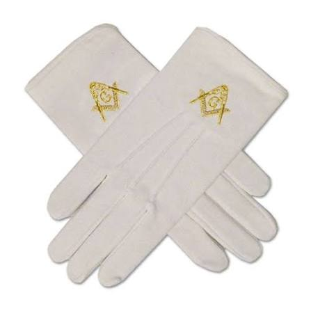
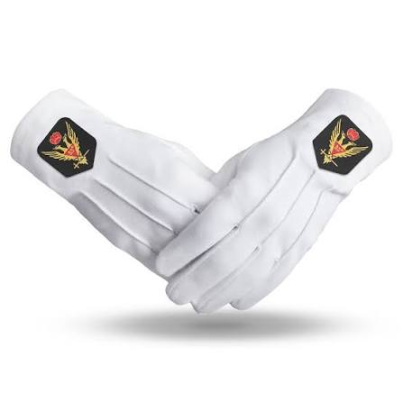

Die Handschuhe The Gloves As Luvas
Reines Handeln und moralische Integrität Pure Action and Moral Integrity Ação Pura e Integridade Moral
„Wie der Schurz das Herz schützt, so schützen die Handschuhe die Hände. Sie erinnern uns, dass unsere Taten stets so rein sein sollen wie das Weiß, das wir tragen." "As the apron protects the heart, the gloves protect the hands. They remind us that our deeds should always be as pure as the white we wear." "Assim como o avental protege o coração, as luvas protegem as mãos. Elas nos lembram que nossas ações devem ser sempre tão puras quanto o branco que usamos."
Was sind die Handschuhe?
Die weißen Handschuhe sind ein fester und unverzichtbarer Bestandteil der freimaurerischen Kleidung. Sie werden dem neuen Freimaurer bei seiner feierlichen Aufnahme überreicht und begleiten ihn durch sein gesamtes Maurerleben.
Weiß ist dabei keine zufällige Wahl: Die weiße Farbe steht in allen Kulturen und Traditionen für Reinheit, Unschuld und moralische Makellosigkeit. In der Freimaurerei verbindet sich dieses Symbol mit der tiefen Überzeugung, dass ein Freimaurer in all seinen Taten rein und ehrenhaft handeln soll.
Aus dem Buch „Schau in Dich": „Die weißen Handschuhe sind Teil der Bekleidung und werden dem Lehrling bei seiner Aufnahme überreicht. Sie sind Symbol des reinen Handelns und Fühlens. Diese sollen den Bruder Freimaurer den gesamten Weg begleiten und immer unverschmutzt bleiben."
Geschichte der Handschuhe
Die Tradition der weißen Handschuhe in der Freimaurerei lässt sich bis in das späte 17. Jahrhundert zurückverfolgen. Besonders in der kontinentalen Freimaurerei, in Frankreich, Deutschland und der Schweiz, entwickelte sich diese Tradition besonders stark.
In der angloamerikanischen Freimaurerei wurden weiße Handschuhe zunächst mit dem Hiram-Legende verknüpft: Sie symbolisierten die Unschuld der Meister gegenüber dem Tod Hirams, des mythischen Baumeisters des Salomonischen Tempels.
Historisch trugen Priester und Richter weiße Handschuhe als Zeichen ihrer Reinheit und Unparteilichkeit. Dieses Symbol wurde von der Freimaurerei übernommen und in den Kontext der moralischen Selbstverpflichtung gestellt.
Was die Handschuhe symbolisieren
What Are the Gloves?
The white gloves are an indispensable part of Masonic attire. They are presented to the new Freemason during the solemn ceremony of initiation and accompany him throughout his entire Masonic life.
The choice of white is not accidental: in all cultures and traditions, white stands for purity, innocence, and moral blamelessness. In Freemasonry, this symbol is connected to the deep conviction that a Freemason should act purely and honorably in all his deeds.
From "Look into Yourself": "The white gloves are part of the attire and are handed to the apprentice upon initiation. They are a symbol of pure action and feeling. They are meant to accompany the brother Freemason throughout his entire journey and should always remain clean."
History of the Gloves
The tradition of white gloves in Freemasonry can be traced back to the late 17th century. Particularly in Continental Freemasonry, in France, Germany, and Switzerland, this tradition became especially well-developed.
In Anglo-American Freemasonry, white gloves were initially connected to the Legend of Hiram: they symbolized the innocence of the Masters regarding the death of Hiram, the mythical builder of Solomon's Temple.
Historically, priests and judges wore white gloves as signs of their purity and impartiality. This symbol was adopted by Freemasonry and placed in the context of moral self-commitment.
What the Gloves Symbolize
O que são as Luvas?
As luvas brancas são uma parte indispensável do vestuário maçônico. São apresentadas ao novo Maçom durante a solene cerimônia de iniciação e o acompanham durante toda a sua vida maçônica.
A escolha do branco não é acidental: em todas as culturas e tradições, o branco representa pureza, inocência e isenção moral. Na Maçonaria, este símbolo está ligado à profunda convicção de que um Maçom deve agir com pureza e honra em todos os seus atos.
De 'Olha para Dentro de Ti': 'As luvas brancas fazem parte do vestuário e são entregues ao aprendiz na sua iniciação. São símbolo de ação e sentimento puros. Devem acompanhar o irmão Maçom em toda a sua jornada e devem permanecer sempre limpas.'
História das Luvas
A tradição das luvas brancas na Maçonaria pode ser rastreada até o final do século XVII. Particularmente na Maçonaria Continental, na França, Alemanha e Suíça, esta tradição tornou-se especialmente desenvolvida.
Na Maçonaria anglo-americana, as luvas brancas foram inicialmente ligadas à Lenda de Hiram: simbolizavam a inocência dos Mestres em relação à morte de Hiram, o lendário construtor do Templo de Salomão.
Historicamente, sacerdotes e juízes usavam luvas brancas como sinais de sua pureza e imparcialidade. Este símbolo foi adotado pela Maçonaria e inserido no contexto do compromisso moral consigo mesmo.
O que as Luvas Simbolizam
Reines HandelnPure ActionAção Pura
Die Hände eines Freimaurers sollen nur für gute und ehrbare Taten genutzt werden.A Freemason's hands should only be used for good and honorable deeds.As mãos de um Maçom devem ser usadas apenas para atos bons e honrosos.
Moralische IntegritätMoral IntegrityIntegridade Moral
Die weißen Handschuhe erinnern uns, dass moralische Reinheit unabhängig davon gilt, ob jemand zuschaut.White gloves remind us that moral purity applies whether or not anyone is watching.As luvas brancas nos lembram que a pureza moral vale independentemente de alguém estar observando ou não.
GleichheitEqualityIgualdade
Wie der Schurz sind Handschuhe für alle gleich, sie überdecken weltliche Unterschiede.Like the apron, gloves are the same for all, they cover worldly distinctions.Como o avental, as luvas são iguais para todos, cobrem as distinções mundanas.
Herz und HandHeart and HandCoração e Mão
„Der Schurz bedeckt das Herz, die Handschuhe bedecken die Hände". Reine Absicht und reines Tun sind verbunden."The apron covers the heart, the gloves cover the hands". Pure intention and pure deed are united.'O avental cobre o coração, as luvas cobrem as mãos'. Intenção pura e ação pura estão unidas.
Das Ritual der zwei Paar
Eines der berührendsten Rituale der Freimaurerei ist die Überreichung von zwei Paar Handschuhen bei der Aufnahme. Diese Tradition gibt es in vielen kontinentalen Obödienzen und hat eine tiefe symbolische Bedeutung:
Das erste Paar
Für den Freimaurer selbst. Ein Symbol seiner eigenen Verpflichtung zu reinem Handeln für den Rest seines Lebens als Freimaurer.
Das zweite Paar
Für „die Gefährtin seines Lebens". Die Frau, die seinem Herzen am nächsten steht. Ein Zeichen, dass die Werte der Freimaurerei bis in das häusliche Leben des Bruders reichen.
Diese Geste ist tief bewegend: Sie anerkennt, dass ein Freimaurer nicht nur in der Loge ein guter Mensch ist, sondern dass seine freimaurerischen Werte sein gesamtes Leben, und die Menschen in seinem Leben, berühren sollen.
In der Loge
Während der Logearbeit tragen alle Anwesenden ihre Handschuhe. Sie sollen sauber und makellos bleiben, sowohl buchstäblich als auch im übertragenen Sinne. Die Handschuhe werden nicht abgenommen; sie begleiten den Bruder durch das gesamte Ritual.
Viele Freimaurer bewahren ihre Handschuhe sorgfältig in ihrer Schurztasche auf. Saubere, weiße Handschuhe zur Logearbeit mitzubringen ist nicht nur Tradition, es ist ein Ausdruck des Respekts gegenüber der Bruderschaft und den eigenen Werten.
Die Verbindung zum Schurz
Der Schurz und die Handschuhe bilden ein symbolisches Paar, das untrennbar zusammengehört:
- Der Schurz bedeckt das Herz — er symbolisiert die inneren Absichten, die moralische Gesinnung und den Willen zur Selbstverbesserung.
- Die Handschuhe bedecken die Hände — sie symbolisieren die äußeren Taten, das sichtbare Verhalten und das Handeln in der Welt.
Zusammen bilden sie die vollständige freimaurerische Botschaft: Reine Absichten führen zu reinen Taten.
The Ritual of Two Pairs
One of the most touching rituals in Freemasonry is the presentation of two pairs of gloves at initiation. This tradition exists in many Continental obediences and carries deep symbolic meaning:
The First Pair
For the Freemason himself. A symbol of his own commitment to pure action for the rest of his life as a Freemason.
The Second Pair
For "the companion of his life". The woman closest to his heart. A sign that the values of Freemasonry extend into the brother's domestic life.
This gesture is deeply moving: it acknowledges that a Freemason is not only a good person within the lodge, but that his Masonic values should touch his entire life, and the people in his life.
In the Lodge
During lodge work, all present wear their gloves. They should remain clean and immaculate, both literally and figuratively. The gloves are not removed; they accompany the brother throughout the entire ritual.
Many Freemasons carefully store their gloves in their apron bag. Bringing clean, white gloves to lodge work is not merely tradition, it is an expression of respect for the brotherhood and one's own values.
The Connection to the Apron
The apron and the gloves form an inseparable symbolic pair:
- The Apron covers the heart — it symbolizes inner intentions, moral character, and the will to self-improvement.
- The Gloves cover the hands — they symbolize outer deeds, visible behavior, and action in the world.
Together they convey the complete Masonic message: Pure intentions lead to pure deeds.
O Ritual dos Dois Pares
Um dos rituais mais tocantes da Maçonaria é a entrega de dois pares de luvas na iniciação. Esta tradição existe em muitas obediências continentais e carrega profundo significado simbólico:
O Primeiro Par
Para o próprio Maçom. Símbolo de seu compromisso pessoal com a ação pura pelo resto de sua vida como Maçom.
O Segundo Par
Para 'a companheira de sua vida'. A mulher mais próxima ao seu coração. Um sinal de que os valores da Maçonaria se estendem além da loja para a vida doméstica do irmão.
Este gesto é profundamente comovente: reconhece que um Maçom não é apenas uma boa pessoa dentro da loja, mas que seus valores maçônicos devem tocar toda a sua vida e as pessoas em sua vida.
Na Loja
Durante o trabalho da loja, todos os presentes usam suas luvas. Elas devem permanecer limpas e imaculadas, tanto literalmente quanto figurativamente. As luvas não são retiradas; acompanham o irmão durante todo o ritual.
Muitos Maçons guardam cuidadosamente suas luvas em sua bolsa de avental. Trazer luvas brancas e limpas para o trabalho da loja não é apenas tradição, é uma expressão de respeito pela fraternidade e pelos próprios valores.
A Conexão com o Avental
O avental e as luvas formam um par simbólico inseparável:
- O Avental cobre o coração — simboliza as intenções internas, o caráter moral e a vontade de aprimoramento pessoal.
- As Luvas cobrem as mãos — simbolizam os atos externos, o comportamento visível e a ação no mundo.
Juntos transmitem a mensagem maçônica completa: Intenções puras conduzem a atos puros.
Bildergalerie
Freimaurerische Handschuhe und Rituale
Image Gallery
Masonic gloves and rituals
Galeria de Imagens
Luvas Maçônicas e rituais






DAS RITUAL DER ZWEI PAAR
„Bei der Aufnahme erhält der Suchende ein weiteres Paar Handschuhe für die ‚Gefährtin deines Lebens' — ein bewegendes Symbol, dass die Werte des Freimaurers über die Logenmauern hinaus in sein Leben wirken sollen."
— Aus dem Buch „Schau in Dich"
THE RITUAL OF TWO PAIRS
"Upon initiation, the seeker receives another pair of gloves for 'the companion of your life' — a moving symbol that the Freemason's values should radiate beyond the lodge walls and into his life."
— From "Look into Yourself"
O RITUAL DOS DOIS PARES
'Na iniciação, o buscador recebe outro par de luvas para 'a companheira da sua vida' — um símbolo comovente de que os valores do Maçom devem irradiar além das paredes da loja para a sua vida.'
— De 'Olha para Dentro de Ti'
Zusammenfassung: Die drei Symbole
Summary: The Three Symbols
Resumo: Os Três Símbolos
Schurz → ArbeitApron → WorkAvental → Trabalho
Die Verpflichtung zur stetigen Arbeit an sich selbst und an der Gesellschaft.The commitment to continual work on the self and on society.O compromisso com o trabalho contínuo sobre si mesmo e sobre a sociedade.
Bijou → AmtJewel → OfficeJoia → Cargo
Die Identifikation mit der Loge und die Verantwortung im Dienst an der Gemeinschaft.Identification with the lodge and the responsibility of service to the community.Identificação com a loja e a responsabilidade do serviço à comunidade.
Handschuhe → ReinheitGloves → PurityLuvas → Pureza
Die Reinheit des Handelns — ehrbare Taten in der Welt, die über die Loge hinausgehen.Purity of action — honorable deeds in the world that extend beyond the lodge.Pureza de ação — atos honrosos no mundo que vão além da loja.